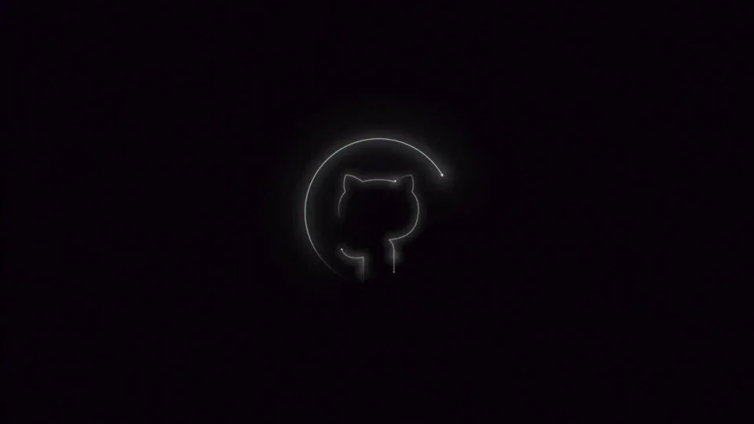
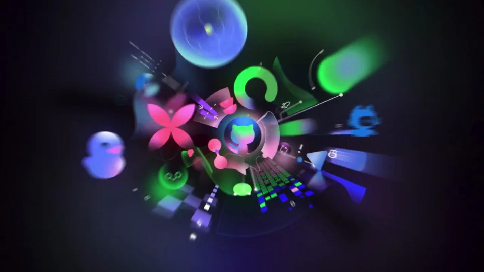
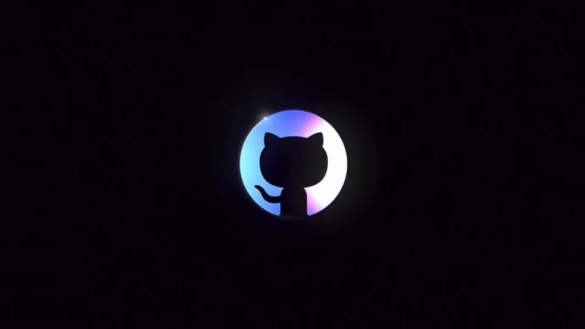

GitHub / V348
Universe 2023｜大会图形揭晓
从黑暗中的细轮廓瞬间展开一个多彩几何世界，再把所有东西收回中心标志。
构图与编排 可播放 · 可替换内容
整体编排规则示例
查看 HTML 源码
<!doctype html><html lang="zh-CN"><meta charset="utf-8"><meta name="viewport" content="width=device-width,initial-scale=1"><title>Universe 2023｜大会图形揭晓 · sequence</title><style>html,body{margin:0;width:100%;height:100%;overflow:hidden;background:#090510}canvas{display:block;width:100%;height:100%;object-fit:contain}</style><body data-mode="sequence"><canvas width="1000" height="600"></canvas><script src="data.js"></script><script src="common.js"></script><script src="scene.js"></script><script src="bridge.js"></script></body></html>画面元素中心品牌圆球体花瓣几何条径向光线
MOTION LANGUAGE
动作与构图
局部动作 · 构图规则
01
爆发以前让轮廓足够安静
爆发以前让轮廓足够安静规则示例
查看 HTML 源码
<!doctype html><html lang="zh-CN"><meta charset="utf-8"><meta name="viewport" content="width=device-width,initial-scale=1"><title>Universe 2023｜大会图形揭晓 · sequence</title><style>html,body{margin:0;width:100%;height:100%;overflow:hidden;background:#090510}canvas{display:block;width:100%;height:100%;object-fit:contain}</style><body data-mode="clip" data-start="1.2" data-end="3"><canvas width="1000" height="600"></canvas><script src="data.js"></script><script src="common.js"></script><script src="scene.js"></script><script src="bridge.js"></script></body></html>黑底中先描出中心标志的局部亮边，尺寸保持小。临界点直接扩大空间，亮度与物体数量一起提升，形成明确反差。
02
几何群围绕中心分层
球、花瓣、环和长条沿径向展开，近处物体更大并允许裁出画幅。绿、紫、粉、青分配给不同形状，中心标志保持辨认空间。
03
收尾沿原路径回收
外围图形缩向中心并褪去色彩，最后只剩白色标志。替换时选择一个中心标志和少量重复几何，不让字句打断六秒的收放动作。
SEQUENCE
段落与节奏
点击段落，定位到上方编排示意。



画面参考 · 离散静帧
KEEP THE RELATIONSHIPS
制作其他主题
- 替换中心标志及几何家族，保留安静→爆发→回收。
制作约束
中心品牌圆 / 球体 / 花瓣 / 几何条 / 径向光线
- 黑底中先描出中心标志的局部亮边，尺寸保持小。临界点直接扩大空间，亮度与物体数量一起提升，形成明确反差。
- 球、花瓣、环和长条沿径向展开，近处物体更大并允许裁出画幅。绿、紫、粉、青分配给不同形状，中心标志保持辨认空间。
- 外围图形缩向中心并褪去色彩，最后只剩白色标志。替换时选择一个中心标志和少量重复几何，不让字句打断六秒的收放动作。